Zuvor
Nachher
Zuvor
Nachher
- Sprache enthält nur tiefe bis mittlere Frequenzen.
- Musik hingegen enthält das gesamte hörbare Frequenzspektrum.
| Attribute | Musik | Sprache | Erklärung |
|---|---|---|---|
| Channels | 2 Channels | 2 Channel | Anzahl der Audiokanäle für Stereo und Mono |
| Sample Rate | 44.1 kHz | 8 kHz | Abtastfrequenz, bestimmt die höchste eindeutig erfassbare Frequenz. |
| Valid Bits | 16 bit | 16 bit | Rundungsauflösung pro Sample. |
| Bytes pro Sample | 2 Byte pro Sample | 2 Byte pro Sample | 16 bit sind 2 Byte. |
| Frames | 220824 Frames | 220824 Frames | Anzahl der Zeitpunkte, ergibt sich aus Dauer und Sample Rate. |
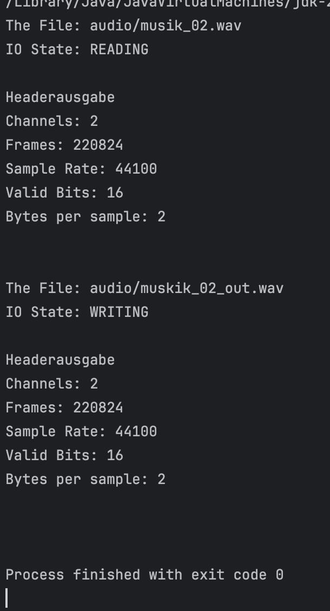
Allgemeine Berechnung:
Bitrate = Abstatfrequenz * Bit-Depth * Anzahl der Kanäle
Berechnung -> 44100 * 16 * 2 = 1411200 Bit/s
Berechnung -> 8000 * 16 * 1 = 128000 Bit/s
Aliasing
Zuvor
Nachher
Sine_hi03.wav.txtZuvor
Nachher
Sine_lo03.wav.txtSchätzung:
Die erste Sinussequenzen wird eine Frequenz von 6149Hz haben.
Die Zweite Sinussequenzen wird eine Frequenz von 3120Hz haben.
weil f = 1/T
Dabei gilt f = Frequenz in Hz und T = Periodendauer in Sekunden.
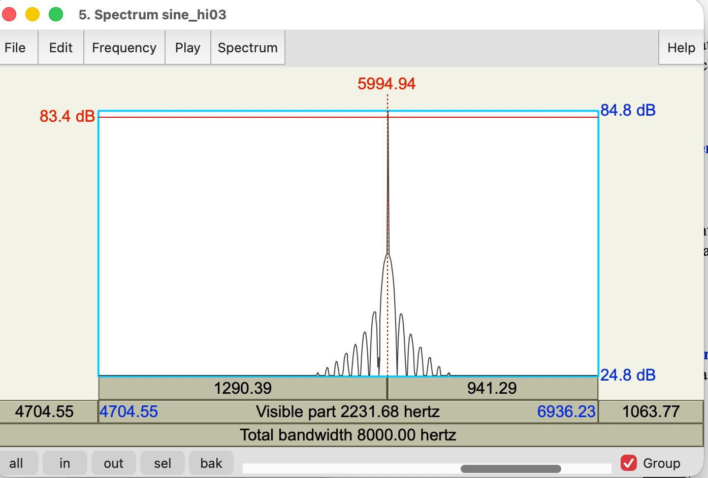
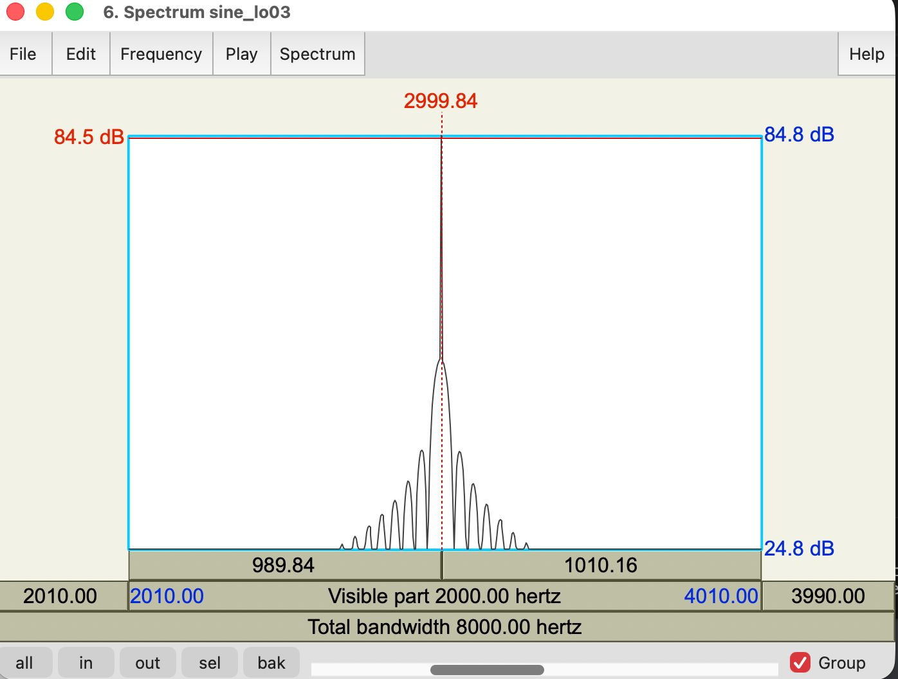
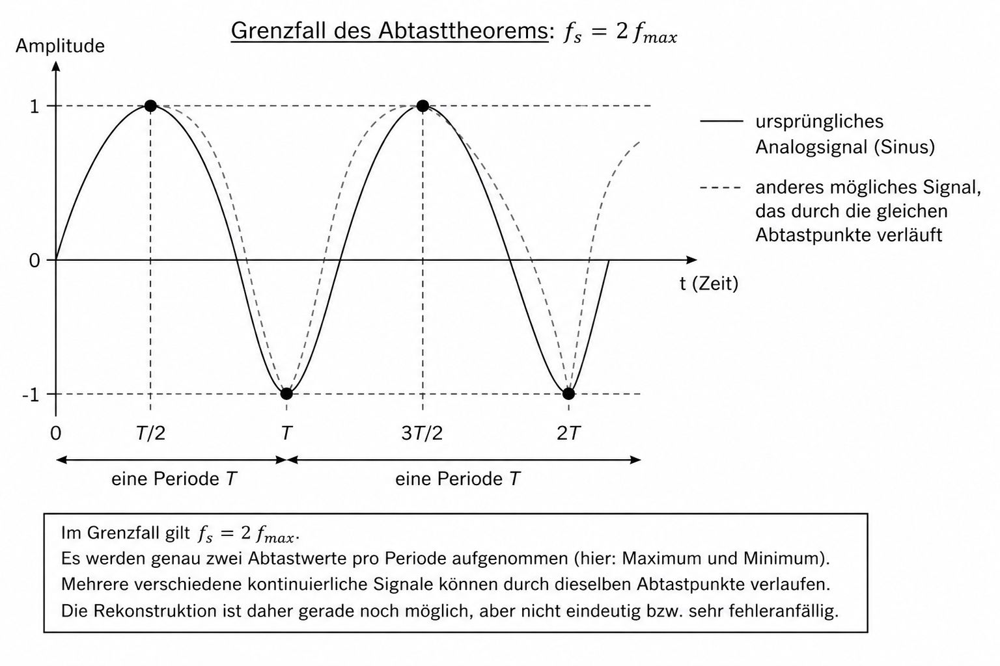
Das Abtasttheorem besagt, dass ein anloges Singal (wie Ton oder Bild) fehlerfrei Digitalisiert und wieder hergestellt werden kann,
wenn die Abtastfrequenz mehr als doppelt so hoch ist wie die höchste enthaltene Signalfrequenz. Formel: fa > 2 * fmax
16/8 Bit Amplitudenwerte
Rechnung: 2^bits
2^8 bits = 256 Amplitudenwerte
2^16 bits = 65.536 Amplitudenwerte
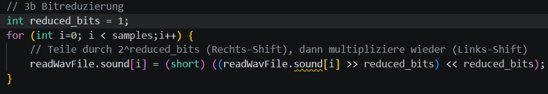
Die Bitanzahl wurde im bitreduce Modus reduziert.
Die Samples werden erst durch 2^n geteilt (Integer-Division ohne Rest) und danach mit 2^n multipliziert,
sodass die Lautstärke mehr oder weniger erhalten bleibt
Der Datentyp bleibt bei 16 bit.
- Rechts-Shift (>>) schneidet die untersten Bits ab (= Ganzzahldivision durch 2ⁿ)
- Links-Shift (<<) stellt die ursprüngliche Größenordnung wieder her (=Multiplikation mit 2^n)
- Abgeschnittene Information (die feinen Amplitudenabstufungen) ist aber verloren.
1 Bit Musik
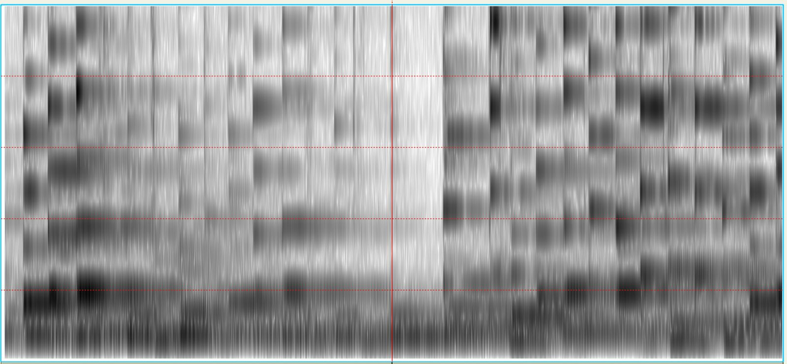
12 Bit Musik
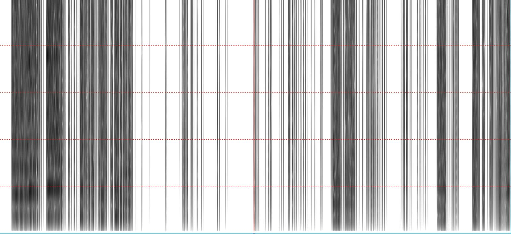
1 Bit Sprache
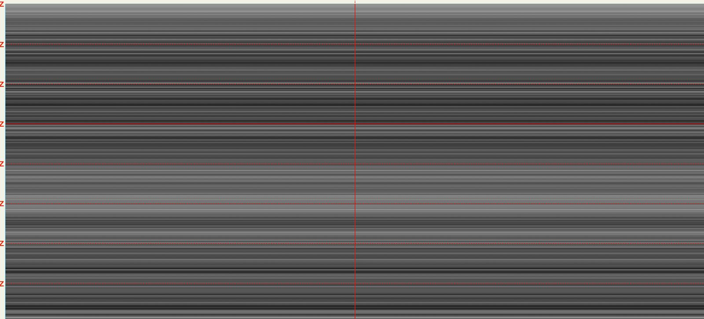
12 Bit Sprache
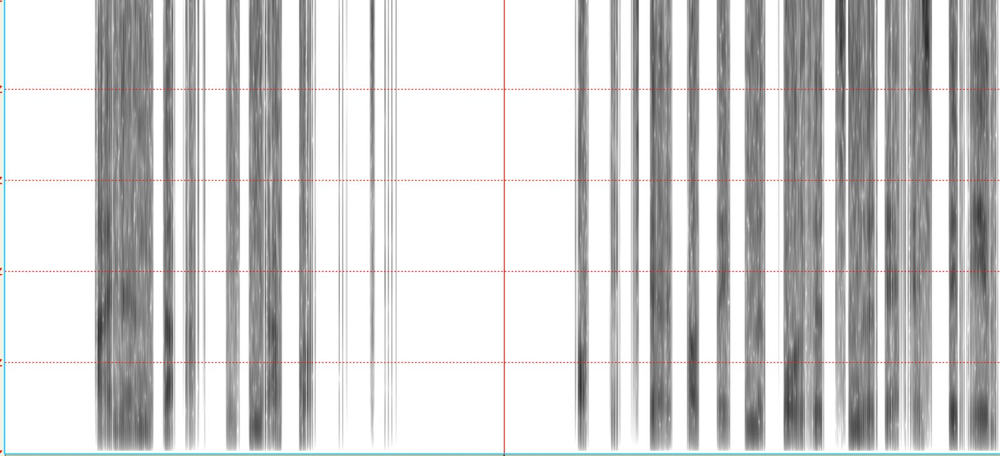
Musik: deutliche Verschlechterung unter 12 Bit
Sprache: noch verständlich bis zu 2-4 Bit
Ab 16 Bit sind räusche praktischnicht nicht mehr hörbar.
- quantisierungsrauschen hängt direkt vom Nutzsignal ab
-> entsteht nur dort, wo Signal vorhanden ist
- Fehler enstehen durch ganzzahlige Rundung
- periodisch strukturiert, nicht zufällig
- Amplitude sehr klein, es werden nur sehr wenige Quantisierungsstufen genutzt
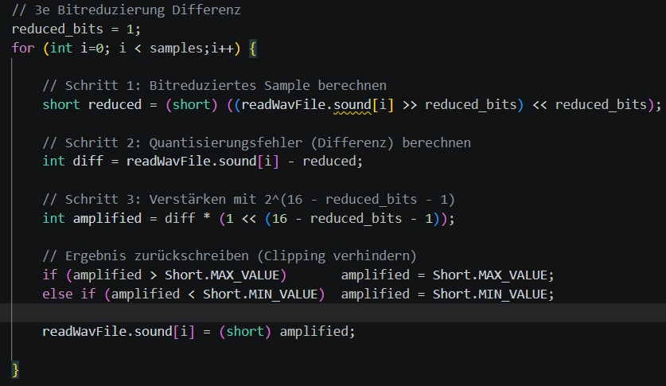
Je mehr Bits reduziert werden, desto kleiner der Verstärkungsfaktor.
Das ist absichtlich, da bei starker Reduzierung der Fehler ohnehin größer ist und sonst ein Überlauf (short-Clipping) entstehen würde.
Das Clipping-Check am Ende verhindert auftretende Überläufe.
1 Bit Musik
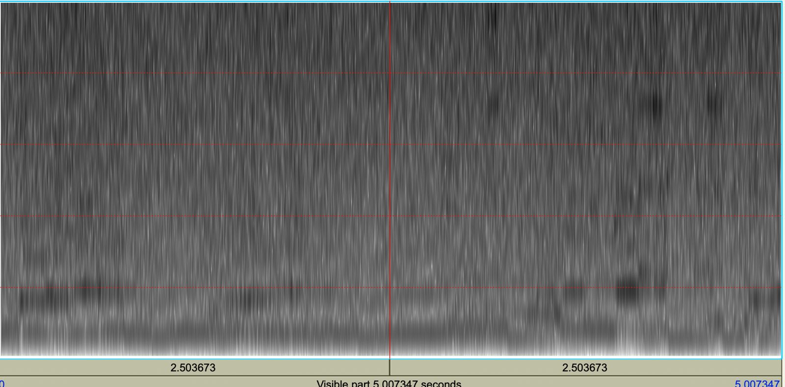
12 Bit Musik
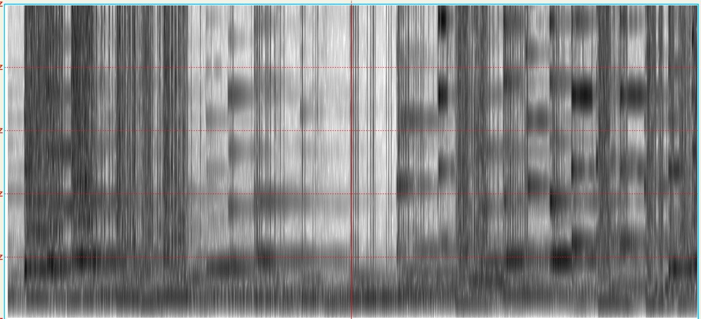
1 Bit Sprache
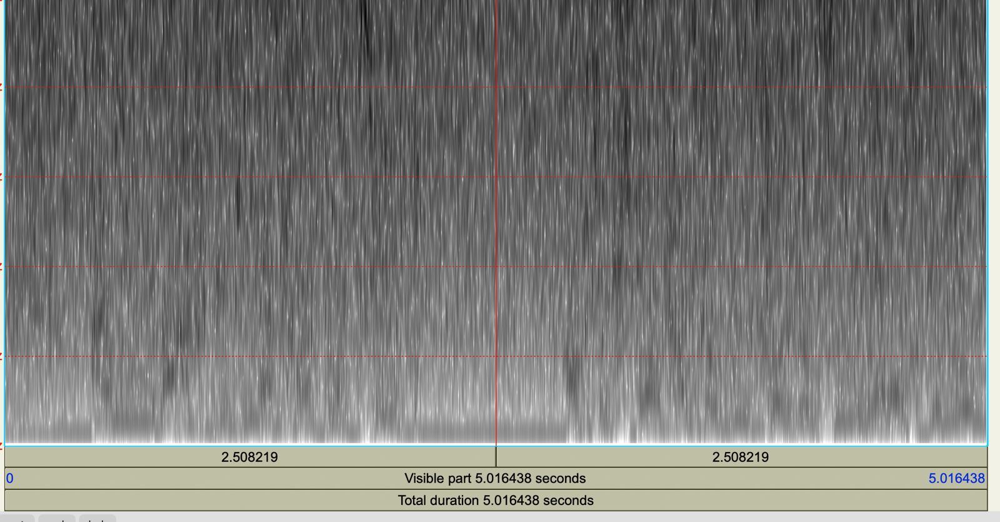
12 Bit Sprache
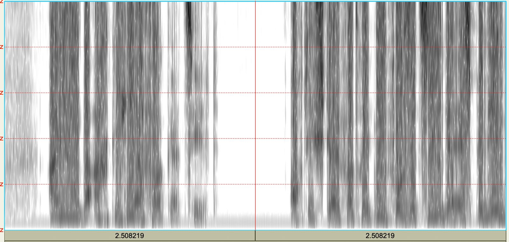
- Quantisierungsfehler kann nur die Werte 0 oder 1 annehmen
- differenzsignal ist simpel, klingt nach einem hochfrequenten, gleichmäßigen knistern
Mit zunehmender Bit-Reduktion verändert sich der Charakter des Rauschens
Wenige bits reduziert:
- rauschen ist zufällig und gleichmäßig, vom Signal unabhängig
Viele bits reduziert:
- typisches Quantisierungsgeräusch
- bei Musik: Verzerren, das mit dem Rhythmus geht